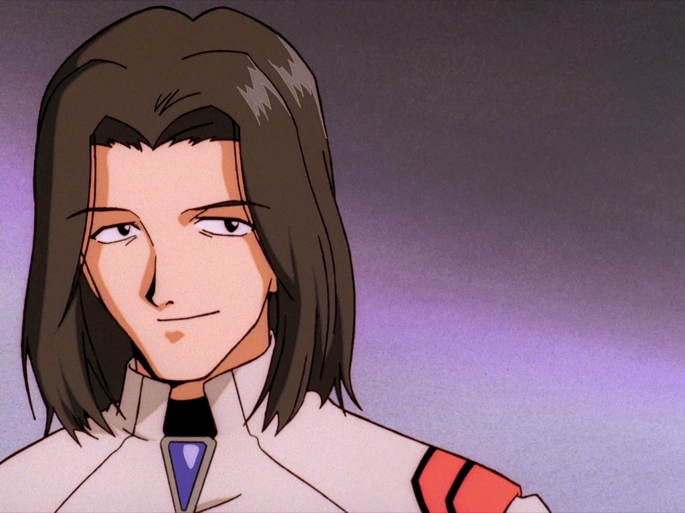

Aoba Shigeru
Lieutenant et opérateur des communications au centre de commandement tactique. Sa personnalité est peu développée, tout ce que l'on sait de lui est qu'il a une passion pour la guitare.
Lieutenant et opérateur des communications au centre de commandement tactique. Sa personnalité est peu développée, tout ce que l'on sait de lui est qu'il a une passion pour la guitare.